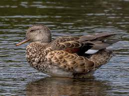

Location : near the towns of Jaisalmer and Barmer, Rajasthan
Established in : 1981
Area : 3162 km2 Flora : Ronj, palm trees, ber, dhok. The vegetation is sparse, and patches of sewan grass and aak shrub
(Calotropis) can be seen.
Fauna : Chinkara (Indian Gazelle), desert fox, Bengal fox, wolf, hedgehog and desert cat. Birds are the great
Indian bustard, demoiselle crane, MacQueen's bustard, sandgrouse, partridges, bee-eaters, larks, houbara bustard, tawny and
steppe eagles, long-legged and honey buzzards, falcons and shrikes. Reptiles are spiny-tailed lizard, monitor lizard,
saw-scaled viper, Russell's viper, common krait.
Features : The endangered Indian bustard is the major attraction of Desert National Park. Brown and white in
colour, the bustard is a metre tall and has long bare legs and a long neck. One can spot this tall and graceful ground-dwelling
bird near the Sudashri waterhole.
Desert National Park
Great Indian bustard
Desert cat
Keoladeo National Park
Location : Bharatpur, Rajasthan
Established in : 1982
Area : 28.7 km2 Flora : Tropical dry deciduous forests intermixed with dry grasslands, shrubs and medium-sized trees.
Fauna : Birds include herons, storks, cormorants, ducks, gadwall, shoveler, cotton teal, common teal, tufted duck, knob-
billed duck, little cormorant, great cormorant, Indian shag, ruff, painted stork, white spoonbill, Asian open-billed stork,
oriental ibis, darter, common sandpiper, wood sandpiper, green sandpiper, Sarus crane, Siberian crane, warblers, babblers,
bee-eaters, bulbuls, buntings, chats, painted francolins, quails, Indian grey hornbill, Marshall's iora, osprey, peregrine
falcon, tawny eagle, imperial eagle, spotted eagle, crested serpent eagle, greater spotted eagle, short-toed eagle, Pallas' sea
eagle.
Mammals include rhesus macaque, Hanuman langur, Nilgai, feral cattle, chital, sambar, blackbuck, hog deer, wild boar, Indian
porcupine, small Indian mongoose, Indian gray mongoose, jungle cat, leopard cat, fishing cat, Asian palm civet, small Indian
civet, Bengal fox, striped hyena, golden jackal, smooth coated otter, coots, rats, mice, gerbils, bats, etc.
Features : UNESCO World Heritage Site
Keoladeo National Park

Gadwall
Painted francolin
Hog deer
Mukundra Hills National Park
Location : Khathiar-Gir dry deciduous forests.
Established in : 2004
Area : 759.99 km2 Flora : It has grasslands in between and also many dry deciduous trees. Tree species include Acacia
nilotica, Anthocephalus, Atrocarpus heterophyllus, Aegle marmelos, Azadirachta indica,
Bombax ceiba, Cassia fistula, Citrus aurantifolia, Delonix regia, Dalbergia sissoo,
Phyllanthus emblica, Eucalyptus, Ficus religiosa, Ficus glomerata, Ficus benghalensis.
Fauna : Bengal tiger, the Indian wolf and the Indian leopard are the major carnivores in this reserve. Prey
species include the chital, sambar deer, wild boar and the nilgai. Sloth bear and chinkara also inhabit the area. Reptiles
include the Mugger crocodile and the gharial.
Features : It consists of three wildlife sanctuaries: Darrah Wildlife Sanctuary, National Chambal Sanctuary,
and Jawahar Sagar Wildlife Sanctuary.
Mukundra Hills National Park
Indian leopard
Mugger crocodile
Ranthambore National Park
Location : Bounded to the north by the Banas River and to the south by the Chambal River.
Established in : 1980
Area : 1334 km2 Flora : Ranthambore National Park harbours dry deciduous forests and open grassy meadow. The flora of the
park includes 539 species of flowering plants.
Fauna : Bengal tiger, Indian leopard, nilgai, wild boar, sambar, striped hyena, sloth bear, southern plains
gray langur, rhesus macaque, mugger crocodile and chital
Features : Padam Talao is the largest of the many lakes in the park. A red sandstone Jogi Mahal is at the
edge of the lake. A gigantic Banyan tree, considered to be India's second largest, is also near the lake.
Ranthambore National Park
Banyan tree at Ranthambore National Park
Rhesus macaque
Sariska National Park
Location : Alwar district, Rajasthan
Established in : 1979
Area : 881 km2 Flora : Scrub-thorn arid forests, dry deciduous forests, shrubs and grasslands. The dominant tree in the
forests is dhok. Other trees are salar, kadaya, dhak, ber, gol, khair, arjun, bargad, gugal or bamboo.
Fauna : Bengal tiger, Indian leopard, jungle cat, caracal, striped hyena, golden jackal, chital, sambar deer,
nilgai, wild boar, small Indian civet, Javan mongoose, ruddy mongoose, honey badger, Rhesus macaque and Northern plains gray
langur and Indian hare.
Bird species present include grey partridge, white-throated kingfisher, Indian peafowl, bush quail, sandgrouse, treepie,
golden-backed woodpecker, crested serpent eagle and the Indian eagle-owl.
Features : Part of Project Tiger